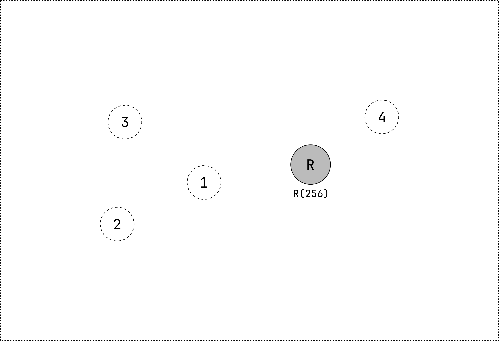
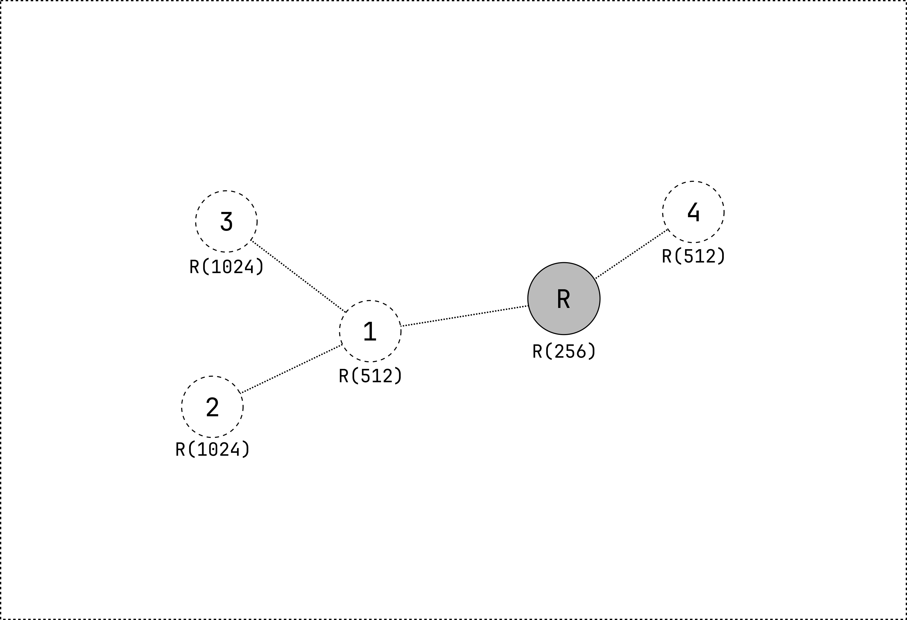

Introduction
This website is still under construction.
RPL support is not yet available in the main branch of smoltcp.
The current RPL implementation is available in the `rpl` branch of smoltcp.
Note that the RPL implementation is still experimental and not yet ready for production.
The Routing Protocol for Low-power and lossy networks (RPL) is a routing protocol for low power and lossy networks (LLNs). It is designed to be used in various application domains such as industrial monitoring, building automation, connected homes, and smart cities. RPL is a distance vector routing protocol that builds a Directed Acyclic Graph (DAG) connecting the nodes in the network. The DAG is used to route packets in the network. RPL is designed to be used in networks where the nodes are constrained in terms of power, memory, and processing resources.
The goal of this website is to better explain how RPL works and how to use it with smoltcp.
At the moment, the RPL implementation can be found in the rpl branch of smoltcp.
Implementations of RPL
Contiki-NG is an open-source operating system for the Internet of Things. It is a fork of the Contiki operating system and supports a wide range of platforms. Contiki-NG includes an implementation of RPL.
Using smoltcp
1. Adding smoltcp to your Cargo.toml
To use smoltcp in your project, you must add it as a dependency in the Cargo.toml file.
smoltcp uses a lot of feature flags for configuration and therefore the correct ones need to be added.
Depending on the medium that is used, at least one of the following features must be enabled:
medium-ethernetfor Ethernet devices;medium-ieee802154for IEEE802.15.4 devices. Enabling this feature, also enablesproto-sixlowpan;medium-ipfor devices without medium.
For the network layer, at least one of the following features must be enabled:
proto-ipv4for IPv4;proto-ipv6for IPv6;proto-sixlowpanfor 6LoWPAN.
There are many more feature flags that can be enabled. For more information, see the documentation.
For a IEEE802.15.4 device using 6LoWPAN and RPL, the following is added in the `Cargo.toml` file:
```toml
[dependencies.smoltcp]
version = "0.10"
default-features = false
features = [
"medium-ieee802154",
"proto-sixlowpan",
"rpl-mop-2"
]
```
This will use RPL with MOP 2 (Storing Mode of Operation) and 6LoWPAN with the IEEE802.15.4 medium.
These are the available modes of operation: `rpl-mop-0`, `rpl-mop-1`, `rpl-mop-2` and `rpl-mop-3`.
2. Implementing smoltcp::phy::Device for your platform
In order for smoltcp to effectively handle incoming and outgoing packets,
a connection must be established between the TCP/IP stack and the underlying hardware.
This essential linkage is achieved by implementing the smoltcp::phy::Device
trait for the hardware:
#![allow(unused)] fn main() { extern crate smoltcp; use smoltcp::phy::DeviceCapabilities; pub trait RxToken { fn consume<R, F>(self, f: F) -> R where F: FnOnce(&mut [u8]) -> R; } pub trait TxToken { fn consume<R, F>(self, len: usize, f: F) -> R where F: FnOnce(&mut [u8]) -> R; } pub trait Device { type RxToken<'a>: RxToken where Self: 'a; type TxToken<'a>: TxToken where Self: 'a; fn receive(&mut self, timestamp: Instant) -> Option<(Self::RxToken<'_>, Self::TxToken<'_>)>; fn transmit(&mut self, timestamp: Instant) -> Option<Self::TxToken<'_>>; fn capabilities(&self) -> DeviceCapabilities; } }
3. Setting up the smoltcp stack
Once you have the Device trait implemented, an Interface can be created.
The Interface is the main entry point for the smoltcp stack.
It is responsible for handling incoming and outgoing packets, as well as managing the sockets.
The Interface is created by passing a Config
and a Device to the new function.
The Config struct contains all the configuration options for the stack.
The MyDevice is the hardware abstraction layer that was implemented in the previous step.
extern crate smoltcp; use smoltcp::wire::*; use smoltcp::iface::{Interface, Config}; use smoltcp::socket::{SocketSet, SocketStorage}; fn main() { // Get the MAC address from the device: let mac_adddr = Ieee802154Address::Extended([0x1, 0x2, 0x3, 0x4, 0x5, 0x6, 0x7, 0x8]); // Create the device: let mut device = MyDevice::new(mac_adddr); // Create the configuration for the stack: let mut config = Config::new(mac_addr.into()); config.pan_id = Some(Ieee802154Pan(0xbeef)); // Create the sockets: let mut sockets_buffer = [SocketStorage::EMPTY; 1]; let mut sockets = SocketSet::new(&mut sockets_buffer[..]); // Create the interface: let mut iface = Interface::new(config, device)?; }
4. Polling the smoltcp stack
The interface is now ready to be used.
Polling the interface will handle incoming and outgoing packets.
For the interface to continue working, it must be polled regularly.
This is done by calling the poll
function on the interface.
If a packet is received, it is queued by the device and can be handled by the stack.
After processing the packet, the stack might have to send a packet.
Calling poll_at on the interface returns the time when the next poll should be called.
Calling poll before that time is only wasting energy, but is not harmful for the stack.
Calling poll after that duration might be harmful for the stack.
#![allow(unused)] fn main() { loop { iface.poll(now, device, sockets); match iface.poll_at(Instant::now()) { Some(Instant::ZERO) => continue, Some(d) => sleep(d), None => sleep_until_new_packet(), } } }
5. You're all set 🎉 (for now)
That's it! There is nothing more that needs to be done!
The smoltcp stack will now handle all incoming and outgoing packets.
The next step is to create sockets and use them to send and receive data.
Adding sockets
In the previous section, we created device with an interface.
We already used a SocketSet, however, this one was empty.
Let's create a TcpSocket and add it to the SocketSet:
#![allow(unused)] fn main() { let mut sockets = SocketSet::new(vec![]); let tcp_socket = TcpSocket::new( TcpSocketBuffer::new(vec![0;1500]), TcpSocketBuffer::new(vec![0;1500]), ); let tcp_handle = sockets.add(tcp_socket); }
Now, we can use the TcpSocket to connect to a remote host:
#![allow(unused)] fn main() { let remote_addr = Ipv6Address::new(0xfe80, 0, 0, 0, 0, 0, 0, 2); let remote_port = 4242; let host_port = 4343; let socket = socket.get_mut::<tcp::Socket>(tcp_handle); socket.connect(iface.context(), (remote_addr, remote_port), host_port).unwrap(); }
The TcpSocket will now try to connect to the remote host.
However, we still need to poll the interface to make sure that the TcpSocket can send and receive packets.
#![allow(unused)] fn main() { loop { if let Err(e) = iface.poll(&mut sockets, Instant::now()) { println!("Network error: {:?}", e); continue; } } }
The TcpSocket is now ready to send and receive data.
#![allow(unused)] fn main() { loop { if let Err(e) = iface.poll(&mut sockets, Instant::now()) { println!("Network error: {:?}", e); continue; } let mut socket = sockets.get::<TcpSocket>(tcp_handle); if !socket.is_open() { println!("Connection closed"); break; } if socket.can_send() { socket.send_slice(b"Hello world!").unwrap(); } if socket.can_recv() { let data = socket.recv(|data| { println!("Received data: {:?}", data); (data.len(), data) }).unwrap(); } } }
Other socket types
The TcpSocket is not the only socket type available.
There are also the following types:
Dhcpv4Socket: a DHCPv4 client socket;UdpSocket: a UDP socket;DnsSocket: a DNS client socket;IcmpSocket: an ICMP socket. This socket type is used to send and receive ICMP packets and might listen for specific ICMP error messages related to a UDP/TCP port;RawSocket: a raw socket. This socket type is used to send and receive raw packets.
Every socket type requires to enable the corresponding feature.
Adding RPL
To enable RPL, one of the following feature flags must be enabled:
rpl-mop-0: Enables RPL in only upward messages (MOP0);rpl-mop-1: Enables RPL in non-storing mode (MOP1);rpl-mop-2: Enables RPL in storing mode (MOP2);rpl-mop-3: Enables RPL in storing mode with multicast (MOP3).
When enabling one of these feature flags, it is required to add a RPL configuration to the the interface.
#![allow(unused)] fn main() { use smoltcp::iface::{Interface, Config, RplConfig, RplModeOfOperation}; let mut config = Config::new(mac_addr.into()); config.rpl = RplConfig::new(RplModeOfOperation::StoringMode); }
For a RPL root node, the root configuration must be added:
#![allow(unused)] fn main() { let mut config = Config::new(mac_addr.into()); config.rpl = RplConfig::new(RplModeOfOperation::StoringMode).add_root_config( RplRootConfig::new( RplInstanceId::new(30), // Instance ID Ipv6Address::new(0xfd00, 0, 0, 0, 0, 0, 0, 1), // DODAG ID ) ); }
That's it! The interface is now using RPL 🎉
RPL
Routing Protocol for Low-Power and lossy networks (RPL), defined in RFC 6550, is a routing protocol for Low-Power and Lossy Networks (LLNs) These networks are characterized by:
- low bandwidth;
- high packet loss rates;
- hgih latency.
RPL is a distance vector routing protocol that builds a Destination Oriented Directed Acyclic Graph (DODAG) rooted at a single destination. The DODAG is built using control messages, specifically ICMPv6 messages. RPL supports Point to Point (P2P), Multipoint to Point (M2P) and Point to Multipoint (P2M) traffic. P2P communication occurs between two nodes, M2P communication involves data being sent from multiple nodes to a central node, and P2M communication involves data being sent from a central node to multiple nodes. RPL uses upward and downward routes to facilitate these different types of traffic. Upward routes lead towards the root of the network, while downward routes start at the root and lead towards other nodes in the network.
Destination Oriented Directed Acyclic Graph (DODAG)
RPL specifies how to construct a Directed Acyclic Graph (DAG) rooted at a single destination, known as a Destination-Oriented DAG (DODAG), using an objective function and a set of metrics and constraints. The objective function evaluates a combination of metrics and constraints to determine the best path for packets to follow.
Rank
The Rank of a node is a measure of its distance from the root node. The rank is determined using routing metrics, which include characteristics of both the links (such as throughput, latency, link reliability, expected transmission count, link quality level) and the nodes (such as energy state). These metrics are used in objective functions to calculate the cost of a route between nodes.
Parents
The parents of a node are all its neighbors that are part of a possible route to the sink node. A neighbor is a node that can be reached via single hop radio link. The preferred parent of a node is the neighbor that is on the best route from the node to the sink, depending on the objective function used.
RPL Instance
The RPL Instance is a group of DODAGs that have the same RPL Instance ID. All DODAGs in the same RPL Instance share the same objective function.
DODAG ID
The DODAG ID is a globally unique identifier for the DODAG. This is one of the routable IPv6 address of the root node of the DODAG.
Version number
The version number is a counter that is incremented by the root node whenever a new version of the DODAG is created.
Mode of Operations
RPL supports 4 mode of operations (MOPs):
- MOP 0: No downward routes maintained
- MOP 1: Non-storing mode
- MOP 2: Storing mode with no multicast supports
- MOP 3: Storing mode with multicast support
In MOP0, only upward routes are maintained. In MOP1, MOP2 and MOP3, both upward and downward routes are maintained. In MOP1, only the root node maintains downward routes. In MOP2 and MOP3, all nodes maintain downward routes. In MOP3, multicast is supported.
Control Messages
The DODAG is created with the assistance of control messages, specifically ICMPv6 messages. The four types of control messages that RPL uses to construct the DODAG are:
- DODAG Information Solicitation (DIS).
- DODAG Information Object (DIO)
- Destination Advertisement Object (DAO)
- Destination Advertisement Object Acknowledgment (DAO-ACK)
MOP0: no downward routes maintained
In this mode of operation, the network is configured such that only upward routes are established. This means that any node in the network can transmit messages to the root node or any other node on its path towards the root, but not to other nodes in the network. The default route, represented by the parent of the node, is used to transmit data packets in an upward direction.
In this mode of operation, **only** DIS and DIO messages are sent.
RPL network formation
The following network contains 5 nodes. The root node (R) and 4 normal nodes. They are all using the same RPL Instance ID, Mode of Operation and Objective Function.
 Figure 1: an empty network with 4 normal nodes and 1 root node.
The root node periodically sends a DODAG Information Object (DIO) packet,
which contains information about the RPL network, more specifically about the DODAG.
The DIO message is sent using the all-RPL-node IPv6 multicast address (ff02::a1).
Nodes that receive this message will join the RPL network and select the root node as their parent.
These nodes will also set their rank based on the objective function and the information received in the DIO message.
They will also start sending DIO messages.
A node that does not hear any DIO message but wants to join a RPL network can send a DODAG Information Solicitation (DIS) message.
This message is sent to the all-RPL-node IPv6 multicast address (ff02::a1).
A node that is part of a RPL network will respond to this message with a DIO message.
 Figure 2: the root transmits a DIO and node 1 and 4 receive it.
Node 3 transmits a DIS message.
Figure 2: the root transmits a DIO and node 1 and 4 receive it.
Node 3 transmits a DIS message.
Nodes 1 and 4 have selected the root node as their parent and have calculated their rank. They now start to transmit DIO messages as well, based on the Trickle Timer algorithm. Since node 2 and 3 are in range of node 1, they will receive the DIO message and join the RPL network.
The root node also hears the DIO message from node 1 and 4, however, since their rank is higher than the root node's rank, the root node will ignore the DIO message. This guarantees optimal route selection and avoids loops.
Figure 3: node 2 and 3 receive the DIO message from node 1 and 4 and join the RPL network. Node 2 and 3 start sending DIO messages as well.
Every node in the network now has a parent and a rank. They will continue to send DIO messages based on the Trickle Timer algorithm. Other packets, such as data packets, are sent using the default route, which is the parent of the node. This means that data packets will always be sent in an upward direction, towards the root node. Node 1 will never be able to send a data packet to node 4, since node 4 is not on the path towards the root node. Neither will 3 be able to send a data packet to 2. However, node 2 can send a data packet to node 1, since node 1 is on the path towards the root node. This is not the use case for this mode of operation, but it is possible. The use case for this mode of operation is to send data packets to the root node, which collects the data and sends it to a server.
 Figure 4: the network is formed.
Maintenance of a RPL network
The DIO messages will be sent by nodes even after the DODAG is formed. The goal of sending DIO messages for the whole life of a RPL network is to maintain or upgrade the formed DODAG. However, the constant generation of control messages can consume a lot of energy. To preserve resources, the sending of control messages is minimized and only done when necessary, through the use of the Trickle Timer algorithm.
The Trickle Timer algorithm monitors the consistency of packet exchange in the network. If the pattern is consistent and free of redundant or outdated data, the Trickle Timer decreases the rate of sending DIO messages exponentially. However, if there are any inconsistencies in the network, the next DIO message is rescheduled and sent at the shortest possible time interval. In other words, this algorithm ensures that DIOs are aggressively advertised when the network is unstable and advertised at a slower pace when it is stable.
There are four parameters that control the functioning of the Trickle Timer:
-
\(I_{min}\), which represents the minimum time interval between two DIO messages
-
\(I_{max}\), which represents the maximum time interval between two DIO message
-
\(k\), which represents the redundancy constant (the number of redundant control messages)
-
\(I\), which represents the size of the current time-interval
In the beginning, \(I\) is set to a random value between \(I_{min}\) and \(2 \cdot I_{min}\). DIO messages are sent when \(I\) expires and if the counter (\(c\)) that keeps track of the consistent received messages is smaller than \(k\). If the network is stable, \(I\) is doubled until it reaches \(I_{max}\). However, if inconsistencies are detected in the network, \(I\) is reset to a value between \(I_{min}\) and \(2 \cdot I_{min}\). This ensures efficient use of resources while still being able to ensure the maintainance of the network.
Summary
- Network is formed by sending DIO messages
- DIO messages are sent periodically using the Trickle Timer algorithm
- DIO messages are sent to the all-RPL-node IPv6 multicast address (
ff02::a1) - Nodes that receive a DIO message will join the RPL network
- Nodes that do not receive a DIO message can send a DIS message
- Packets only travel in an upward direction
MOP1: non-storing mode
In this mode of operation, the network is configured such that both upward and downward routes are established. This means that the root can send data packets to the nodes in the network and that any node in the network can transmit messages to any other node.
In this mode of operation, IPv6 routing headers are used.
RPL network formation
The formation of the network is done in the same way as in MOP 0. However, in MOP 1 the DAO messages are sent to the root when joining the network. The root will answer with a DAO-ACK message, if requested by the DAO message.
A DAO message contains information about the parent of the node. The address of the preferred parent is transmitted in the Transit Information RPL option of the DAO message. The address of the child is transmitted in the Target RPL option of the DAO message.
When the root receives a DAO message, it will add the address of the child to its routing table together with the address of the parent. When the network is formed, the root has a complete overview of the network topology.
 Figure 1: node 1 and 4 send a DAO message to the root after joining the network.
Figure 1: node 1 and 4 send a DAO message to the root after joining the network.
Nodes can now send data packets to any other node in the network. First, the packet is sent to the parent of the node until it reaches the root. The root will then add a source routing header (SRH) to the packet. The SRH contains the path that the packet needs to follow toward the destination. It is constructed by the root based on the routing table.
Node 2 transmits a packet to node 3 (imagine that node 3 is not in range of node 2).
1. The packet is first transmitted to the preferred parent of node 2 (node 1).
2. Since node 1 is not the root, it will forward the packet to its preferred parent (the root).
3. The root will add a source routing header to the packet and send it to node 1.
4. Node 1 uses the source routing header to transmit the packet to node 3.

Maintainance of the network
Just like in MOP 0, the network is maintained by sending DIO messages based on the Trickle timer. However, routes also need to be maintained. This is done by sending DAO messages to the root. The root increments the DTSN in its DIO messages. When a node receives a DIO message with a higher DTSN, it will send a DAO message to the root. In smoltcp, nodes periodically send DAO messages to the root, without waiting for a DIO message with a higher DTSN.
Summary
- Network is formed by sending DIO messages
- When a node joins the network, it sends a DAO message to the root
- The root answers with a DAO-ACK message (if requested)
- The root has a complete overview of the network topology
- Nodes can send data packets to any other node in the network
- The root adds a source routing header (SRH) to downward packets
MOP2: storing mode without multicast
In this mode of operation, the network is formed like non-storing mode, but the DAO messages are sent to the preferred parent. Each node stores a routing table containing information on how to reach all their descendants (all the nodes in their subtree). A node receiving a DAO transmits a new DAO message to its own preffered parent. The route information is propagated upwards until it reaches the root.
Since the DAO messages are sent in one hop, the transit information option, usually used to indicate the parent of the node, is left empty. Instead, the destination address of the DAO message is used as the address of the preferred parent.
Figure 1: node 1 and 4 send a DAO message to the root after joining the network. The transit information option is left empty.
Nodes can now send data packets to any other node in the network, since they have a downward route to all their descendants. When a node receives a packet, it first checks if it has a downward route to the destination of the packet. A packet first goes to a common ancestor of the sender and receiver, and then it is forwarded downwards to the receiver.
Node 2 transmits a packet to node 3 (imagine that node 3 is not in range of node 2).
1. The packet is first transmitted to the preferred parent of node 2 (node 1),
since node 2 does not have a downward route to node 3.
2. Node 1 forwards the packet to node 3, since it has a downward route to node 3.

Summary
- Every node in the network has an overview of the network topology.
- Packets travel via a common ancestor of the sender and receiver.
MOP3: storing mode with multicast
This is a work in progress!
Control Message Formats
DODAG Information Solicitation (DIS)
Sent by nodes that are not part of a RPL network to request information about existing DODAGs in range of the node. It is broadcasted, however, it can be unicast if it is for probing. Using the Solicited Information option, the DODAGs are filtered, i.e., filtering on Version number, RPL Instance ID and/or DODAG ID.
Packet structure
0 1 2
0 1 2 3 4 5 6 7 8 9 0 1 2 3 4 5 6 7 8 9 0 1 2 3
+-+-+-+-+-+-+-+-+-+-+-+-+-+-+-+-+-+-+-+-+-+-+-+-+
| Flags | Reserved | Option(s)...
+-+-+-+-+-+-+-+-+-+-+-+-+-+-+-+-+-+-+-+-+-+-+-+-+
- Flags: unused field, must be set to zero.
- Reserved: unused field, must be set to zero.
- Option(s): Pad1, PadN, Solicited Information.
Scope: all-RPL-nodes multicast address, or link-local unicast address
Sending a DIS
- The node is a ROOT node:
- A ROOT node should never send a DIS, unless it is [probing]. When probing, the DIS message is a unicast message.
- The node is a LEAF node:
- Never sends a DIS.
- The node is not a LEAF node:
- The node is not part of a DODAG:
- Transmit a multicast DIS message. Usually this is only sent after 5 seconds and then every 60 seconds. The DIS message MAY contain a Solicited Information option, which is used for filtering DODAGs.
- The node is part of a DODAG:
- The node should not send a DIS, unless it is [probing]. When probing, the DIS message is a unicast message.
- The node is not part of a DODAG:
Receiving a DIS
- The node is a ROOT node:
- Check if the Solicited Information option is present. This option has predicates that we need to match on.
- After matching the predicates:
- Multicast DIS: reset the [Trickle] timer.
When the timer expires, a
multicast DIO message is transmitted. - Unicast DIS: do not reset the [Trickle] timer, but respond with a
unicast DIO message, which MUST contain a DODAG Configuration option.
- Multicast DIS: reset the [Trickle] timer.
When the timer expires, a
- The node is a LEAF node:
- Ignore the DIS message.
- The node is not a LEAF node:
- The node is part of a DODAG: handle the message like the ROOT node.
- The node is not part of a DODAG:
ignore the message.
DODAG Information Object (DIO)
Sent by nodes that are part of a RPL network. It is broadcasted, however, it can be unicast if it is for probing. They send this message periodicaly, based on the Trickle timer. They are also sent as a response on a DIS message. The message contains information about the DODAG it is part of. More information is usually contained in a DODAG Configuration option.
Packet structure
0 1 2 3
0 1 2 3 4 5 6 7 8 9 0 1 2 3 4 5 6 7 8 9 0 1 2 3 4 5 6 7 8 9 0 1
+-+-+-+-+-+-+-+-+-+-+-+-+-+-+-+-+-+-+-+-+-+-+-+-+-+-+-+-+-+-+-+-+
| RPLInstanceID |Version Number | Rank |
+-+-+-+-+-+-+-+-+-+-+-+-+-+-+-+-+-+-+-+-+-+-+-+-+-+-+-+-+-+-+-+-+
|G|0| MOP | Prf | DTSN | Flags | Reserved |
+-+-+-+-+-+-+-+-+-+-+-+-+-+-+-+-+-+-+-+-+-+-+-+-+-+-+-+-+-+-+-+-+
| |
+ +
| |
+ DODAGID +
| |
+ +
| |
+-+-+-+-+-+-+-+-+-+-+-+-+-+-+-+-+-+-+-+-+-+-+-+-+-+-+-+-+-+-+-+-+
| Option(s)...
+-+-+-+-+-+-+-+-+
- RplInstanceId: the RPL instance ID.
- Version Number the version of the RPL isntance, specifies an iteration (Section 8.2).
- Rank: shows a relative distance from the advertising node to the root (Section 8.2).
- G (Grounded): indicates if the scope of the application is met or not (application specific and in our case always 0).
- 0: unused field, must be set to zero.
- MOP (Mode Of Operation): the mode of operation of the DODAG.
- Prf (Preference): indicates how preferable the root node is (0 is least preferred) (Section 8.2).
- DTSN (DAO Trigger Sequence Number): used to maintain downward routes (Section 9).
- Flags: unused field, must be set to zero.
- Reserved: unused field, must be set to zero.
- DODAGID: the identifier of the root, which is the IPv6 address of the root.
- Options(s): Pad1, PadN, DAG Metric Container, Route Information, DODAG Configuration, Prefix Information.
Scope: all-RPL-nodes multicast address, or link-local unicast address
Sending a DIO
-
The node is a ROOT node:
-
Based on the Trickle timer a
multicast DIO message is transmitted, containing a DODAG Configuration option. Note that the standard does not require this. However, the option contains useful information about the Trickle timer and the objective function.If nodes in range, not connected to a DODAG, are interested in this option (they require to know the objective function that is used), then they will send a
unicast DIS message. As a response, aunicast DIO message is sent, which MUST contain a DODAG Configuration option. If the number of interested nodes is high, then the overhead of the exchange ofunicast messages might be significant.The following values are set by the user of the library:
- RPL Instance ID
- Version number
- Grounded (G)
- Mode of Operation (MOP)
- Preference (Prf)
- DODAG ID
The Rank is equal to the ROOT Rank value. The DTSN is a sequence counter starting with the default value, [incremented] when new route information is required.
-
-
The node is a LEAF node:
- A LEAF node does not transmit a DIO [Section 8.5].
-
The node is not a LEAF node:
-
The node is part of a DODAG: behave as the ROOT node, however, the DIO information was obtained when receiving a DIO message from a node with a lower Rank. The Rank was computed when selecting a parent. The DTSN is a sequence counter starting with the default value, [incremented] when new route information is required.
-
The node is not part of a DODAG: the node does not send a DIO.
-
Receiving a DIO
-
The node is a ROOT node:
- The DIO is ignored1.
-
The node is part of a DODAG:
- Ignore if the Rank is higher than ours.
- Add sender to the parent list and check for new preferred parent.
- Selected a new preferred parent:
- MOP 1: Send DAO message to the ROOT node. The parent address is in the DAO Transit Information option.
- MOP 2-3:
- Send No-path DAO message to old preferred parent.
- Send DAO message to the new preferred parent (which is forwarded to the ROOT node). The destination needs to be the preferred parent, since this contains the information about who the parent is. There is no Transit Information option.
- Selected a new preferred parent:
-
The node is not part of a DODAG:
- The node is a leaf:
- Accept the DIO and select sender as a parent.
The node is now part of a DODAG .
- The node is not a leaf:
- A DODAG Configuration option is present:
- The node accepts the DIO, iff the mode of operation and objective function is the same.
The mode of operation and objective function(s) are set by the developer . The node then joins the network:- Copy the following fields (
a non-root node cannot modify these ):- Grounded (G)
- Mode of Operation (MOP)
- Preference (Prf)
- Version number
- RPL Instance ID
- DODAG ID
- Select the sender of the DIO as a parent and send DAOs accordingly (see step 2).
- Calculate a Rank using the Objective Function.
- Reset the Trickle timer to make sure that this node now also sends DIOs.
The node is now part of a DODAG .
- Copy the following fields (
- The node accepts the DIO, iff the mode of operation and objective function is the same.
- A DODAG Configuration option is not present:
- Transmit a
unicast DIS message to gain information about the used objective function.
- Transmit a
- A DODAG Configuration option is present:
- The node is a leaf:
1 Note that in smoltcp, we check the DIO, even as a ROOT node. If the DIO is part of the ROOTs DODAG, then we add the node to the neighbour list. Otherwise we don't have the link-layer address of our neighbours.
Destination Advertisement Object (DAO)
Sent by nodes that have selected a parent. For Mode of Operation 1 (non-storing), the message is sent to the DODAG root. For Mode of Operation 2 and 3, the message is sent to the preferred parent. It is sent to propagate routing information.
Packet structure
0 1 2 3
0 1 2 3 4 5 6 7 8 9 0 1 2 3 4 5 6 7 8 9 0 1 2 3 4 5 6 7 8 9 0 1
+-+-+-+-+-+-+-+-+-+-+-+-+-+-+-+-+-+-+-+-+-+-+-+-+-+-+-+-+-+-+-+-+
| RPLInstanceID |K|D| Flags | Reserved | DAOSequence |
+-+-+-+-+-+-+-+-+-+-+-+-+-+-+-+-+-+-+-+-+-+-+-+-+-+-+-+-+-+-+-+-+
| |
+ +
| |
+ DODAGID* +
| |
+ +
| |
+-+-+-+-+-+-+-+-+-+-+-+-+-+-+-+-+-+-+-+-+-+-+-+-+-+-+-+-+-+-+-+-+
| Option(s)...
+-+-+-+-+-+-+-+-+
- RplInstanceId: the RPL instance ID.
- K: if set, an acknowledgement is requested.
- D: if set, the DODAGID is present in the message.
- Flags: unused field, must be set to zero.
- Reserved: unused field, must be set to zero.
- DAOSequence: indicates the freshness of the information. It is incremented for each unique DAO message, echoed in the DAO-ACK.
- DODAGID: the identifier of the root, which is the IPv6 address of the root.
- Options: Pad1, PadN, RPL Target, Transit Information, RPL Target Descriptor.
Scope: in MOP 1, global or unique-local addresses are used for the source and destination address. In other modes, the addresses are link-local addresses.
Sending a DAO
-
The node is a ROOT node:
- The ROOT node should not send a DAO.
-
The node is part of a DODAG:
-
First parent selection:
-
MOP 1: send a DAO to the
DODAG root , containing a Transit Information option and a RPL Target option. The Transit Information option copntians the parent and the route lifetime. The RPL Target option contains the original sender IPv6 prefix ? address of the DAO message. -
MOP 2 - 3: send a DAO to the
preferred parent, containing a Transit Information option and a RPL Target option. The Transit Information option only contains the route lifetime and not the parent address. The parent address is already in the IPv6 destination address. The RPL Target option contains the original sender IPv6 prefix ? address of the DAO message.
-
-
Switched parent:
-
MOP 1: send a DAO to the
DODAG root , containing a Transit Information option and a RPL Target option. The Transit Information option copntians the parent and the route lifetime. The RPL Target option contains the original sender IPv6 prefix ? address of the DAO message. -
MOP 2 - 3:
- Send a No-Path DAO to the old parent,
containing a Transit Information option and a RPL Target option.
The Transit Information option has a
path lifetime of 0x00 . - Send a DAO to the
preferred parent, containing a Transit Information option and a RPL Target option. The Transit Information option only contains the route lifetime and not the parent address. The parent address is already in the IPv6 destination address. The RPL Target option contains the original sender IPv6 prefix ? address of the DAO message.
- Send a No-Path DAO to the old parent,
containing a Transit Information option and a RPL Target option.
The Transit Information option has a
-
-
Maintanance of the route:
-
MOP 1: the ROOT node increments the DTSN in the DIO messages. When a node receives a DIO from the its parent with a new DTSN, it should transmit a DAO to the ROOT, as previously explained.
In smoltcp, the ROOT never increments the DTSN, and each node just keeps track of a DAO expiration timer, just like MOP 2 - 3 . -
MOP 2 - 3: each non-leaf and non-ROOT node should keep track of a DAO expiration timer. When this timer expires, the node needs to transmit a DAO to its preferred parent, as previously explained. The DAO retransmition should be one or two minutes before the expriation of the route.
-
Every time a DAO message is transmitted, the DAO Sequence number is incremented.
smoltcp always enables the acknowledgement request flag. The lifetime of the route is 30 minutes. Missing a DAO is significant . -
-
The node is not part of a DODADG:
- The node should not send a DAO since it has not selected a parent.
Receiving a DAO
-
The node is a ROOT node:
- Store the route in the routing table.
-
The node is a LEAF node:
- Should never receive a DAO, so ignore the message.
-
The node is not a LEAF node:
-
MOP 1: all DAO messages are forwared to the default route, untill it reaches the destination (which should be the ROOT).
-
MOP 2:
- Store the information in the routing table.
- If the information is new, create a new DAO message which is sent to the preferred parent.
Information is new when:
- It has a newer Path Sequence number.
- It has additional Path Control bits.
- It is a No-Path DAO message.
-
Node is the destination address and ACK is requested:
- Transmit a DAO-ACK to the source of the DAO, with the correct status flags.
-
DAO Acknowledgement (DAO-ACK)
The DAO-ACK is a response on a DAO that requested an acknowledgement. They are unicast messages.
Packet structure
0 1 2 3
0 1 2 3 4 5 6 7 8 9 0 1 2 3 4 5 6 7 8 9 0 1 2 3 4 5 6 7 8 9 0 1
+-+-+-+-+-+-+-+-+-+-+-+-+-+-+-+-+-+-+-+-+-+-+-+-+-+-+-+-+-+-+-+-+
| RPLInstanceID |D| Reserved | DAOSequence | Status |
+-+-+-+-+-+-+-+-+-+-+-+-+-+-+-+-+-+-+-+-+-+-+-+-+-+-+-+-+-+-+-+-+
| |
+ +
| |
+ DODAGID* +
| |
+ +
| |
+-+-+-+-+-+-+-+-+-+-+-+-+-+-+-+-+-+-+-+-+-+-+-+-+-+-+-+-+-+-+-+-+
| Option(s)...
+-+-+-+-+-+-+-+-+
- RplInstanceId: the RPL instance ID.
- D: if set, the DODAGID is present in the message.
- Reserved: unused field, must be set to zero.
- DAOSequence: correlates to the DAO message.
- Status: indicates the completion.
- Value of 0: the parent accepts to be the parent.
- Value of 1-127: the parent suggests to find another parent.
- Value of 127-255: the parent rejects to be the parent.
- DODAGID: the identifier of the root, which is the IPv6 address of the root.
- Options: Pad1, PadN.
Scope: in MOP 1, global or unique-local addresses are used for the source and destination address. In other modes, the addresses are link-local addresses.
Sending a DAO-ACK
When the K flag is set to 1 in the DAO message, respond with a DAO-ACK with the correct
status.
Receiving a DAO-ACK
-
The node is the destination: mark the DAO as acknowledged.
- Status 0: the parent is selected.
- Status 1 - 127: remove the parent from the parent set if the parent set has more than 1 parent entry. This is not a hard requirement.
- Status 127 - 255: remove the parent from the parent set.
-
The node is not the destination: forward the message if the node is not a LEAF node.
Options
Pad1
Used for option alignement.
0
0 1 2 3 4 5 6 7
+-+-+-+-+-+-+-+-+
| Type = 0x00 |
+-+-+-+-+-+-+-+-+
PadN
Used for option alignement.
0 1 2
0 1 2 3 4 5 6 7 8 9 0 1 2 3 4 5 6 7 8 9 0 1 2 3
+-+-+-+-+-+-+-+-+-+-+-+-+-+-+-+-+- - - - - - - -
| Type = 0x01 | Option Length | 0x00 Padding...
+-+-+-+-+-+-+-+-+-+-+-+-+-+-+-+-+- - - - - - - -
DAG Metric Container
Contains metrics about the network. There can be more than one DAG Metric Container option. More information about metrics are in RFC6551: Routing Metrics Used for Path Calculation in Low-Power and Lossy Networks
0 1 2
0 1 2 3 4 5 6 7 8 9 0 1 2 3 4 5 6 7 8 9 0 1 2 3
+-+-+-+-+-+-+-+-+-+-+-+-+-+-+-+-+- - - - - - - -
| Type = 0x02 | Option Length | Metric Data
+-+-+-+-+-+-+-+-+-+-+-+-+-+-+-+-+- - - - - - - -
Route Information
0 1 2 3
0 1 2 3 4 5 6 7 8 9 0 1 2 3 4 5 6 7 8 9 0 1 2 3 4 5 6 7 8 9 0 1
+-+-+-+-+-+-+-+-+-+-+-+-+-+-+-+-+-+-+-+-+-+-+-+-+-+-+-+-+-+-+-+-+
| Type = 0x03 | Option Length | Prefix Length |Resvd|Prf|Resvd|
+-+-+-+-+-+-+-+-+-+-+-+-+-+-+-+-+-+-+-+-+-+-+-+-+-+-+-+-+-+-+-+-+
| Route Lifetime |
+-+-+-+-+-+-+-+-+-+-+-+-+-+-+-+-+-+-+-+-+-+-+-+-+-+-+-+-+-+-+-+-+
| |
. Prefix (Variable Length) .
. .
+-+-+-+-+-+-+-+-+-+-+-+-+-+-+-+-+-+-+-+-+-+-+-+-+-+-+-+-+-+-+-+-+
DODAG Configuration
This option contains information about the DODAG. This information usually does not change within a DODAG and it is not necassary to include it in each [DIO]. The ROOT is the only node that sets this information.
0 1 2 3
0 1 2 3 4 5 6 7 8 9 0 1 2 3 4 5 6 7 8 9 0 1 2 3 4 5 6 7 8 9 0 1
+-+-+-+-+-+-+-+-+-+-+-+-+-+-+-+-+-+-+-+-+-+-+-+-+-+-+-+-+-+-+-+-+
| Type = 0x04 |Opt Length = 14| Flags |A| PCS | DIOIntDoubl. |
+-+-+-+-+-+-+-+-+-+-+-+-+-+-+-+-+-+-+-+-+-+-+-+-+-+-+-+-+-+-+-+-+
| DIOIntMin. | DIORedun. | MaxRankIncrease |
+-+-+-+-+-+-+-+-+-+-+-+-+-+-+-+-+-+-+-+-+-+-+-+-+-+-+-+-+-+-+-+-+
| MinHopRankIncrease | OCP |
+-+-+-+-+-+-+-+-+-+-+-+-+-+-+-+-+-+-+-+-+-+-+-+-+-+-+-+-+-+-+-+-+
| Reserved | Def. Lifetime | Lifetime Unit |
+-+-+-+-+-+-+-+-+-+-+-+-+-+-+-+-+-+-+-+-+-+-+-+-+-+-+-+-+-+-+-+-+
- Flags: unused, set to zero, ignored.
- A: 0 if there is no security.
- PCS (Path Control Size): number of bits to be allocated to the path control field.
- DIOIntDoubl.: variable used by the Trickle timer.
- DIOIntMin.: variable used by the Trickle timer.
- DIORedun.: variable used by the Trikle timer.
- MaxRankIncrease: variable used by the objective function.
- MinHopRankIncrease: variable used by the objective function.
- OCP (Objective Code Point): identifies what objective function is used by the DODAG.
- Reserved: unused, set to zero, ignored.
- Def. Lifetime: lifetime that is used as default for all RPL routes in the routing tables.
- Lifetime Unit: lifetime unit in seconds that is used for all RPL routes in the routing tables.
RPL Target
This option contains information about the child. The message is only used in combination wiath a Transit Information option. The target prefix field contains the global or unique-local IPv6 address.
0 1 2 3
0 1 2 3 4 5 6 7 8 9 0 1 2 3 4 5 6 7 8 9 0 1 2 3 4 5 6 7 8 9 0 1
+-+-+-+-+-+-+-+-+-+-+-+-+-+-+-+-+-+-+-+-+-+-+-+-+-+-+-+-+-+-+-+-+
| Type = 0x05 | Option Length | Flags | Prefix Length |
+-+-+-+-+-+-+-+-+-+-+-+-+-+-+-+-+-+-+-+-+-+-+-+-+-+-+-+-+-+-+-+-+
| |
+ +
| Target Prefix (Variable Length) |
. .
. .
+-+-+-+-+-+-+-+-+-+-+-+-+-+-+-+-+-+-+-+-+-+-+-+-+-+-+-+-+-+-+-+-+
- Flags: unused, set to zero, ignored.
- Prefix Length: number of valid leading bits of the prefix.
- Target Prefix: contains the prefix or the full IPv6 address of the child node.
Transit Information
This option contains information about the lifetime of a route, the parent used in the route or to invalidate a route.
0 1 2 3
0 1 2 3 4 5 6 7 8 9 0 1 2 3 4 5 6 7 8 9 0 1 2 3 4 5 6 7 8 9 0 1
+-+-+-+-+-+-+-+-+-+-+-+-+-+-+-+-+-+-+-+-+-+-+-+-+-+-+-+-+-+-+-+-+
| Type = 0x06 | Option Length |E| Flags | Path Control |
+-+-+-+-+-+-+-+-+-+-+-+-+-+-+-+-+-+-+-+-+-+-+-+-+-+-+-+-+-+-+-+-+
| Path Sequence | Path Lifetime | |
+-+-+-+-+-+-+-+-+-+-+-+-+-+-+-+-+ +
| |
+ +
| |
+ Parent Address* +
| |
+ +-+-+-+-+-+-+-+-+-+-+-+-+-+-+-+-+
| |
+-+-+-+-+-+-+-+-+-+-+-+-+-+-+-+-+
- E (External): indicates that the parent router redistributes external targets into the RPL network. An External Target is a Target that has been learned through an alternate protocol.
- Flags: unused, set to zero, ignored.
- Path Control: limits the number of DAO parents to which a DAO message advertises connectivity and communicate preference among the parents.
- Path Sequence: increased whenever information in this option is newer information.
- Path Lifetime: the length of time in Lifetime Units that the prefix is valid for route determination.
- Parent Address:
- MOP 1: the address of the parent.
- MOP 2 - 3: field is not present.
Solicited Information
This option is used when sending a DIS to filter potential DODAGs. When receiving such an option, a node will check if it matches the predicates.
0 1 2 3
0 1 2 3 4 5 6 7 8 9 0 1 2 3 4 5 6 7 8 9 0 1 2 3 4 5 6 7 8 9 0 1
+-+-+-+-+-+-+-+-+-+-+-+-+-+-+-+-+-+-+-+-+-+-+-+-+-+-+-+-+-+-+-+-+
| Type = 0x07 |Opt Length = 19| RPLInstanceID |V|I|D| Flags |
+-+-+-+-+-+-+-+-+-+-+-+-+-+-+-+-+-+-+-+-+-+-+-+-+-+-+-+-+-+-+-+-+
| |
+ +
| |
+ DODAGID +
| |
+ +
| |
+-+-+-+-+-+-+-+-+-+-+-+-+-+-+-+-+-+-+-+-+-+-+-+-+-+-+-+-+-+-+-+-+
|Version Number |
+-+-+-+-+-+-+-+-+
- RPLInstanceID: The RPL Instance ID predicate.
- V: Filter using the Version number.
- I: Filter using the RPL Instance ID.
- D: Filter using the DODAG ID.
- Flags: unused, set to zero, ignored.
- DODAGID: The DODAG ID predicate.
- Version Number: The Version Number predicate.
Prefix Information
This option is used by a router to indicate nodes in the DODAG what prefix to use.
0 1 2 3
0 1 2 3 4 5 6 7 8 9 0 1 2 3 4 5 6 7 8 9 0 1 2 3 4 5 6 7 8 9 0 1
+-+-+-+-+-+-+-+-+-+-+-+-+-+-+-+-+-+-+-+-+-+-+-+-+-+-+-+-+-+-+-+-+
| Type = 0x08 |Opt Length = 30| Prefix Length |L|A|R|Reserved1|
+-+-+-+-+-+-+-+-+-+-+-+-+-+-+-+-+-+-+-+-+-+-+-+-+-+-+-+-+-+-+-+-+
| Valid Lifetime |
+-+-+-+-+-+-+-+-+-+-+-+-+-+-+-+-+-+-+-+-+-+-+-+-+-+-+-+-+-+-+-+-+
| Preferred Lifetime |
+-+-+-+-+-+-+-+-+-+-+-+-+-+-+-+-+-+-+-+-+-+-+-+-+-+-+-+-+-+-+-+-+
| Reserved2 |
+-+-+-+-+-+-+-+-+-+-+-+-+-+-+-+-+-+-+-+-+-+-+-+-+-+-+-+-+-+-+-+-+
| |
+ +
| |
+ Prefix +
| |
+ +
| |
+-+-+-+-+-+-+-+-+-+-+-+-+-+-+-+-+-+-+-+-+-+-+-+-+-+-+-+-+-+-+-+-+
- Prefix Length: the number of leading bits in the Prefix field that are valid.
- L: indicates that this prefix can be used for on-link determination.
- A: indicates that this prefix can be used for stateless address configuration.
- R: indicaties that the prefix field contains a complete IPv6 address assigned to the sending router.
- Reserved1: unused, set to zero, ignored.
- Valid Lifetime: time in seconds that the prefix is valid for the purpose of on-link determination.
- Preferred Lifetime: time in seconds that the addresses generated with the prefix with SLAAC are valid. This should not be higher than the valid lifetime.
- Reserved2: unused, set to zero, ignored.
- Prefix: an IPv6 address or a prefix of an IPv6 address.
RPL Target Descriptor
This option is used to tag a target.
When used, it is always associated with a RPL Target option.
It must be copied by other nodes in the network and not modified.
0 1 2 3
0 1 2 3 4 5 6 7 8 9 0 1 2 3 4 5 6 7 8 9 0 1 2 3 4 5 6 7 8 9 0 1
+-+-+-+-+-+-+-+-+-+-+-+-+-+-+-+-+-+-+-+-+-+-+-+-+-+-+-+-+-+-+-+-+
| Type = 0x09 |Opt Length = 4 | Descriptor
+-+-+-+-+-+-+-+-+-+-+-+-+-+-+-+-+-+-+-+-+-+-+-+-+-+-+-+-+-+-+-+-+
Descriptor (cont.) |
+-+-+-+-+-+-+-+-+-+-+-+-+-+-+-+-+
IPv6 Hop-by-Hop RPL option
IPv6 Source routing header
Incrementing the DTSN
MOP 1: If the DIO from the parent of a node has increased DTSN, then the node itself has to increment its DTSN.
MOP 2 - 3: If the DIO from the parent of a node has increased DTSN, it is not
Incrementing the Path Sequence Number
Optimizations
Trickle timer implementation
The Trickle timer that is implemented in smoltcp uses the enhanced Trickle timer.
Note that Contiki-NG also implements this timer.
Rank-Error
The standard sais that the rank-error bit must be set when a Rank error is detected. A rank error occurs when a packet is traveling throught the DODAG in the wrong direction. Such an error is not considered critical, but a second occurence is. The standard provides an example in which case it might occur. However, this looks like an edge case that will never occur. Therefor, we immediatly drop a packet when a rank error is detected.
About the project
The goal of this project is to add the RPL protocol to the smoltcp Rust library.
The project is funded by NLnet NGI Assure.
More information about the project can be found on their website.